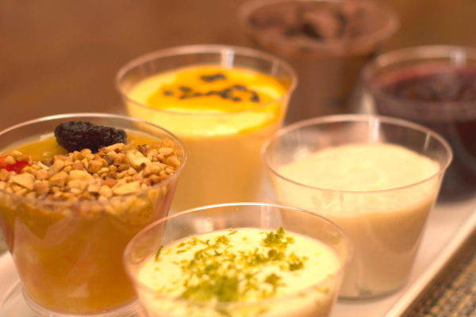
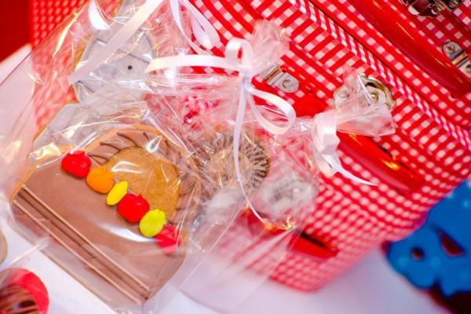

Tudo começou com um sonho, em 2014, quando dona Margarida começou a trabalhar de atendente em uma padaria de Blumenau. Aos poucos ela foi percebendo que seu potencial não seria atingido se continuasse no mesmo cargo por mais tempo, com isso em mente, dona Margarida começou a aprender a decorar seus bolos com o então confeiteiro do lugar onde ela trabalhava. Não demorou muito até que ela comecasse a amar seu trabalho e se dedicar cada vez mais. Foi aprendendo e aprendendo, dia após dia, até chegar o momento de criar o seu próprio negócio! O DeliciDoces é uma empresa administrada inteiramente por dona Margarida, que cria seus bolos com amor, carinho e dedicação.
E você? Está esperando o que para ser feliz?